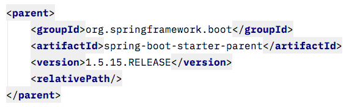
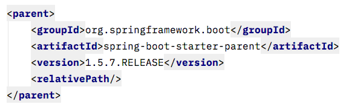

SW 라이브러리 버전 제대로 읽기
외부 라이브러리를 사용하면서 버전이 헷갈리는 경우가 있진 않으셨나요? 다음 중 높은 버전은 무엇일까요?


네, 당연히 1.5.15 가 높습니다. 하지만 얼핏 보면 1.5.7 이 더 높아보일 수 있습니다. 버전 넘버는 마치 소수처럼 보여서 소수점 자리 1과 7을 비교하게 되서 그렇습니다.
이번 포스팅에서는 소프트웨어 버전을 구분하는 방식을 살펴보겠습니다.
Versioning
소프트웨어는 개발 단계와 여러 수정을 거치면서 변해갑니다. 각 수정된 버전을 구분하기 위해서 일련의 숫자와 문자를 가지고 이름을 붙여주는데 이를 버저닝(versioning)이라고 하고, 이때 사용되는 식별자를 차례열 기반 식별자(sequence-based identifiers)라고 합니다.
이는 개발하면서 외부 라이브러리를 많이 사용하면서 생기는 의존성 관리를 위해 사용됩니다. 하지만 이는 사람이 붙이는 번호이기 때문에 보는 사람에 따라 의도한 바와 다르게 느낄 수 있습니다. 따라서 많은 애플리케이션이 약속된 규칙을 따라서 붙입니다.
SemVer
주로 사용되는 방식인 Semantic versioning(SemVer) 은 다음과 같은 포맷을 따릅니다. 버전 숫자는 자연수 형태로 애플리케이션을 수정해서 배포하는 경우 증가하는 순으로 매깁니다.
1 | Major.Minor.Patch |
- Major : 기존 버전과 호환되지 않는 API 를 변경할 때 올림
- Minor : 기존 버전과 호환되면서 새로운 기능을 추가할 때 올림
- Patch : 기존 버전과 호환되면서 버그를 수정할 때 올림
- 여기에 정식배포 전 버전이나 빌드 메타데이터를 위해 라벨을 덧붙이기도 함.

메이저 버전 쪽 번호가 올라갈수록 소프트웨어에 큰 변화가 있다는 것을 알 수 있습니다. 또한 내가 사용하는 라이브러리의 버전을 업데이트할 때 발생할 수 있는 리스크(risk)를 확인할 수 있습니다. 메이저 버전이면 거의 다른 소프트웨어라고 볼 정도로 큰 변화가 생겼다는 뜻이고, 마이너 버전의 경우 일부 기능이 사라져(deprecated) 하위 버전과의 호환성 문제가 있을 수 있고, 패치 업데이트는 단순 버그 픽스 수준으로 버전을 올려도 큰 위험이 없음을 알 수 있습니다.
메이저 버전이 0으로 시작하는 버전은 초기 개발 버전으로 보통 공개하지 않습니다. 1.0.0 버전은 API 를 공개하는 버전입니다. 또한 메이저 버전이 올라가는 경우 나머지 버전은 0에서 시작합니다.
마지막 패치 버전 바로 뒤에 - 를 붙이고 . 로 구분된 식별자를 더해 정식 배포를 앞둔 버전(pre-release version)을 표시할 수 있습니다. 식별자는 아스키(ASCII) 문자, 숫자, - 기호로 구성합니다[0-9A-Za-z-]. 이러한 프리릴리즈 버전은 정식 버전보다 우선순위가 낮고 아직 불안정한 버전입니다. 예를 들면 다음과 같습니다.
- 1.0.0-alpha
- 1.0.0-alpha.1
- 1.0.0-0.3.7
- 1.0.0-x.7.z.92
맨 마지막에는 빌드 메타데이터를 붙이기도 합니다. 빌드 메타데이터는 + 기호를 붙여서 표시하고 프리릴리즈 버전과 마찬가지로 아스키 문자, 숫자, - 기호로 구성합니다. 빌드 메타데이터는 버전 간 우선순위를 구분할 때 무시됩니다. 따라서 빌드 메타데이터만 다른 두 버전은 같은 버전으로 봅니다.
- 1.0.0-alpha+001
- 1.0.0+20130313144700
- 1.0.0-beta+exp.sha.5114f85
이와 비슷한 다른 포맷도 있습니다. [] 안에 들어가는 빌드(build)와 리버전(reversion)은 생략할 수 있습니다.
1 | major.minor[.build[.revision]] |
솔라리스(Solaris)와 리눅스(Linux) 라이브러리들은 다음과 같은 포맷을 따릅니다.[1]
1 | current.reversion.age |
어떤 스키마에서는 정식 버전 대신 개발 버전임을 표시하기 위해서 숫자 대신에 문자를 사용하기도 합니다.
- 알파(alpha) -> 0
- 베타(beta) -> 1
- 릴리즈 예정(release candidate) -> 2
- 릴리즈(release) -> 3
예를 들면 다음과 같습니다.
- 1.2-a1 -> 1.2.0.1
- 1.2-b2 -> 1.2.1.2
- 1.2-rc3 -> 1.2.2.3
- 1.2-r -> 1.2.3.0
- 1.2-r5 -> 1.2.3.5
가끔 마이너 버전을 몇 단계 건너 뛰는 경우도 있습니다. 이런 경우는 메이저 급은 아니지만 소프트웨어에 큰 변화가 있음을 강조하기 위해서, 혹은 현재 버전과 다음 버전 사이에 어느 정도 있는지를 표시하기 위해 이용하기도 합니다.
- Internet Exploere 5.1 -> 5.5
- Adobe Photoshop 5 -> 5.5
하지만 모든 소프트웨어가 이런 버저닝을 따르는 것은 아닙니다. 소프트웨어 별로 각자의 포맷을 사용하는 경우도 있습니다. 마이크로소프트의 윈도우(Windows)만 보더라도 1.0, 3.11, 95(4.0), 98(4.10), 2000(5.0), ME(4.90), XP(5.1), VIsta(6.0), 7(6.1), 8(6.2), 8.1(6.3)으로 매겨져 윈도우 넘버와 버전과 큰 관계가 없었고, 윈도우 10에 와서는 10.0으로 한 번에 확 뛰었습니다.
애플 macOS 의 경우도 조금 특이합니다. 10 버전부터 10을 뜻하는 로마자 X 를 따서 Mac OS X 라는 이름으로 바뀌었습니다(이 이름도 나중에 OS X, macOS 로 변하긴 합니다). 그래서 메이저 버전 숫자는 10으로 두고 대신 마이너 버전을 메이저 버전처럼 사용하고, 패치를 마이너 버전처럼 사용합니다.
| 버전 | 코드네임 | 출시 날짜 | 마지막 버전 |
|---|---|---|---|
| Mac OS X Developer Preview | 1999년 3월 16일 | DP4 (2000년 4월 5일) | |
| Mac OS X Public Beta | Kodiak | 2000년 9월 13일 | 10.b0.2 |
| Mac OS X 10.0 | Cheetah | 2001년 3월 24일 | 10.0.4 |
| Mac OS X 10.1 | Puma | 2001년 9월 25일 | 10.1.5 |
| Mac OS X 10.2 | Jaguar | 2002년 8월 24일 | 10.2.8 |
| Mac OS X 10.3 | Panther | 2003년 10월 24일 | 10.3.9 |
| Mac OS X 10.4 | Tiger | 2005년 4월 29일 | 10.4.11 |
| Mac OS X 10.5 | Leopard | 2007년 10월 26일 | 10.5.8 |
| Mac OS X 10.6 | Snow Lepoard | 2009년 8월 28일 | 10.6.9 |
| Mac OS X 10.7 | Lion | 2011년 7월 20일 | 10.7.5 |
| OS X 10.8 | Mountain Lion | 2012년 7월 25일 | 10.8.5 |
| OS X 10.9 | Mavericks | 2013년 10월 22일 | 10.9.5 |
| OS X 10.10 | Yosemite | 2014년 10월 16일 | 10.10.5 |
| OS X 10.11 | El Capitan | 2015년 10월 1일 | 10.11.6 |
| macOS 10.12 | Sierra | 2016년 9월 20일 | 10.12.6 |
| macOS 10.13 | High Sierra | 2017년 9월 26일 | 10.13.4 |
| macOS 10.14 | Mojave | 2018년 6월 4일 | 10.14 Developer beta 10 |
Snapshot
버전 뒤에 스냅샷(Snapshot) 또는 릴리즈(Release)이 붙어있는 경우가 있습니다. 릴리즈는 정식 버전임을 알 수 있는데 스냅샷은 뭘까요? 스냅샷은 아직 개발 중인 버전, 아직 릴리즈 되지 않은 버전입니다.
따라서 1.0.0.SNAPSHOT 은 아직 개발 중이지만 1.0 에 가까운 버전입니다. 스냅샷 버전은 새롭게 추가된 기능을 사용할 수 있으나 개발 중이라 아직 안정적이진 않은 버전입니다. 이후 안정성이 확인되어 릴리즈 되는 경우에 1.0.0.RELEASE 이런 식으로 정식 버전이 됩니다.
RC
RC(Release Candidate)는 릴리즈 후보라는 뜻으로 정식 배포 전에 테스트하는 버전입니다. 어느 정도 안정성이 확보된 버전으로 테스트 뒤에 정식 버전으로 릴리즈됩니다. RC1, RC2 이런 식으로 특정 숫자가 붙을 수도 있습니다.
이번 포스트에서는 소프트웨어 버전을 붙이는 방법에 대해서 살펴봤습니다. 이 외에도 소프트웨어 별로 독자적인 버전 관리를 하는 경우가 많은데, 큰 틀은 변하지 않으니 쉽게 알아보실 수 있을 겁니다.
참고
- Software versioning
- Semantic Versioning 2.0.0
- What is the difference between a snapshot and the release version in the pom.xml?
- macOS | Wikipedia
- 1.Versioning ↩